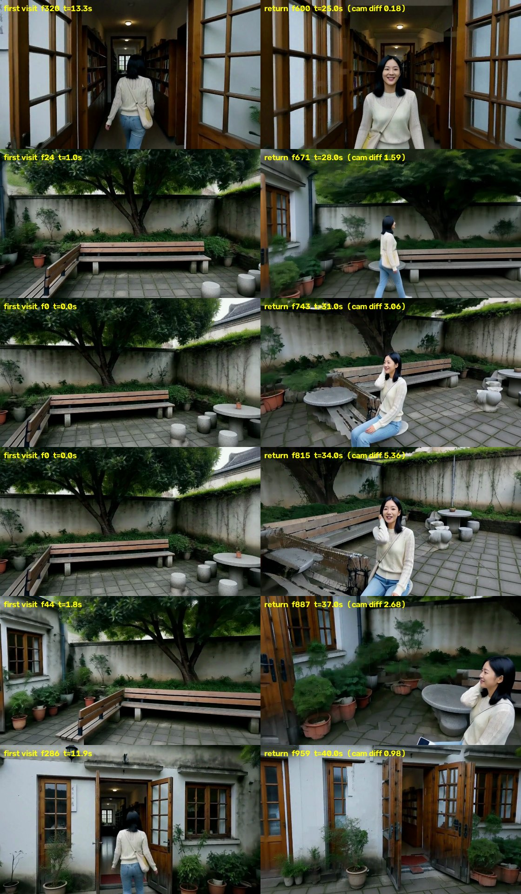
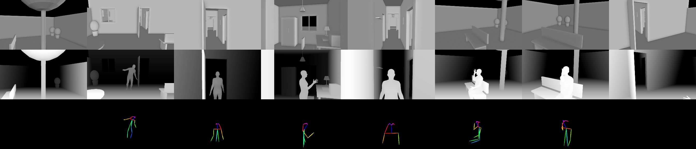
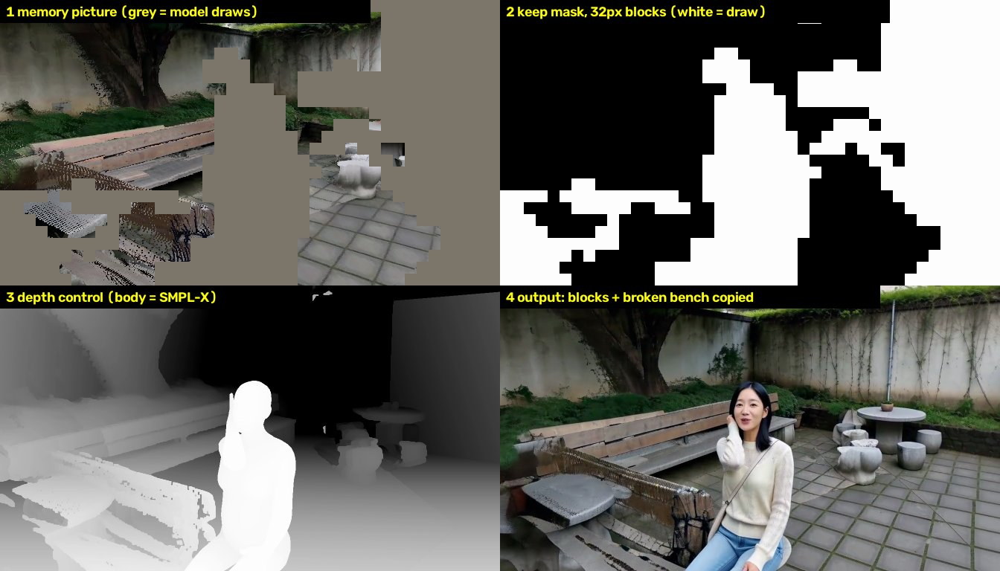
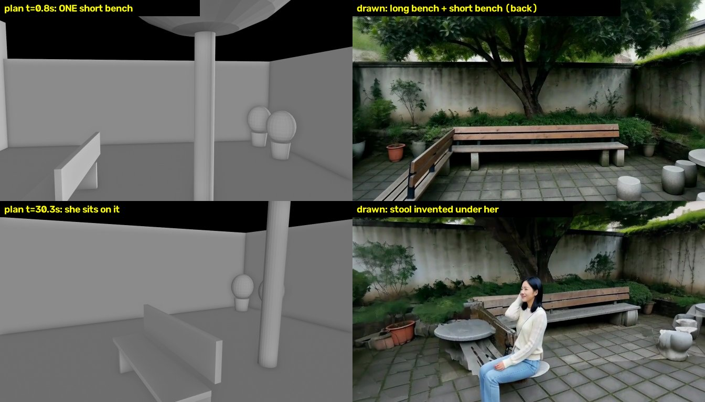

<!doctype html>
<html lang="zh">
<head>
<meta charset="utf-8">
<meta name="viewport" content="width=device-width, initial-scale=1">
<title>一镜到底项目概览</title>
<style>
:root{--bg:#111;--panel:#181a1d;--panel2:#1e2125;--line:#2b2f34;--text:#ddd;--muted:#9a9ea4;--accent:#8cf;--ok:#7c7;--warn:#e9b85a;--err:#e66}
*{box-sizing:border-box}
body{margin:0;background:var(--bg);color:var(--text);font:15px/1.65 -apple-system,BlinkMacSystemFont,"PingFang SC","Noto Sans SC","Microsoft YaHei",sans-serif}
.wrap{max-width:1180px;margin:0 auto;padding:22px 16px 60px}
h1{font-size:24px;margin:0 0 6px}h2{font-size:19px;margin:38px 0 12px;border-bottom:1px solid var(--line);padding-bottom:6px}
h3{font-size:16px;margin:18px 0 8px}
a{color:var(--accent)}
.muted{color:var(--muted)}.small{font-size:13px}
.nav{display:flex;flex-wrap:wrap;gap:8px;margin:10px 0 0}.nav a{background:var(--panel2);border:1px solid var(--line);border-radius:4px;padding:3px 10px;text-decoration:none;font-size:13px}
.box{background:var(--panel);border:1px solid var(--line);border-radius:8px;padding:14px 16px;margin:12px 0}
.status{border-left:4px solid var(--accent)}
.grid2{display:grid;grid-template-columns:repeat(auto-fit,minmax(320px,1fr));gap:14px}
.grid3{display:grid;grid-template-columns:repeat(auto-fit,minmax(260px,1fr));gap:12px}
figure{margin:0;background:var(--panel);border:1px solid var(--line);border-radius:8px;overflow:hidden}
figure img,figure video{width:100%;display:block;background:#000}
figcaption{padding:8px 10px;font-size:13px;color:var(--muted)}figcaption b{color:var(--text)}
.pair{display:grid;grid-template-columns:1fr 1fr}
table{border-collapse:collapse;width:100%;font-size:13.5px}th,td{border:1px solid var(--line);padding:6px 8px;text-align:left;vertical-align:top}th{background:var(--panel2);white-space:nowrap}
.tw{overflow-x:auto;margin:8px 0}
.tag{display:inline-block;border-radius:3px;padding:0 6px;font-size:12px;margin-right:4px;white-space:nowrap}
.t-ok{background:#1f3a24;color:#9e9}.t-mid{background:#3a3220;color:#ec8}.t-bad{background:#3d2022;color:#f99}.t-new{background:#1d3040;color:#9cf}
ol,ul{padding-left:22px}li{margin:3px 0}
svg text{font-family:inherit}
.big{font-size:22px;font-weight:600}
.kpi{display:grid;grid-template-columns:repeat(auto-fit,minmax(170px,1fr));gap:10px;margin:10px 0}
.kpi div{background:var(--panel2);border:1px solid var(--line);border-radius:6px;padding:8px 10px}
.kpi small{display:block;color:var(--muted);font-size:12px}
code{background:var(--panel2);border:1px solid var(--line);border-radius:3px;padding:0 4px;font-size:12.5px}
details summary{cursor:pointer;font-weight:600}pre{margin:10px 0 0}
</head>
<body>
<div class="wrap">
<h1>一镜到底：从一段剧本到分钟级、带对白的连续镜头</h1>
<div class="muted small">研究概览 · 更新于 2026-10-28 · 本页只写当前方法和最新结果 · 逐镜头白模和深度见 <a href="index.html">Story World 查看器</a></div>
<div class="nav"><a href="#task">任务</a><a href="#method">现在的方法</a><a href="#scene">场景记忆</a><a href="#person">人物记忆</a><a href="#result">最新结果 R3</a><a href="#problems">现在的问题</a><a href="#next">下一步</a></div>

<h2 id="task">任务</h2>
<div class="box">
<p style="margin:0 0 6px"><b>输入</b>：一段剧本，粗糙的也可以，由规划器补全。可选：参考动作视频、人物照片、参考声音。</p>
<p style="margin:0 0 6px"><b>输出</b>：分钟级、中间不剪辑的一条连续镜头，写实，带对白和环境声。相机可以穿门过廊，也能回到之前去过的地方。</p>
<p style="margin:0"><b>难点</b>：视频模型一次最多生成约 15 秒，只能分段生成再无缝接上；回到老地方时，场景、人、声音都要和之前一样；人不穿家具；动作要符合剧本或参考动作。</p>
</div>

<h2 id="method">现在的方法（一条流水线）</h2>
<div class="tw"><table>
<tr><th style="width:130px">步骤</th><th>做什么</th><th style="width:250px">产出</th></tr>
<tr><td><b>1 规划</b></td><td>LLM 把剧本写成场景布局（房间、门、家具）和每一段的路线、动作、相机轨迹。校验器在白模里检查相机穿墙、近处遮挡、人被挡、人撞家具，不合格就退回重写。</td><td>scene.json、clips.json</td></tr>
<tr><td><b>2 白模 + 真人体</b></td><td>Blender 沿相机轨迹渲染整条镜头。人物是一条贯穿全程的 SMPL-X 人体动作：走路按走过的距离摆腿，坐下有 1 秒过渡，看手机、打电话有手势，跳舞那段直接接动作捕捉。整条按 15 秒切窗口，相邻窗口重叠约 1 秒。</td><td>每帧深度、骨架图、人体轮廓、相机参数</td></tr>
<tr><td><b>3 动作参考</b>（搭档的预处理）</td><td>有参考动作的那一段（如跳舞），把原舞者的 3D 动作放到我们的机位“重拍”，再用 H3 生成一段 RGB 参考视频。</td><td>&lt;Video 1&gt;</td></tr>
<tr><td><b>4 逐段生成</b></td><td>MiniMax-H3 参考版 + ControlNet-Union，8 步加速，4 张卡，每段约 10–15 分钟。每段的输入：深度控制、场景记忆画面和保留掩码、人物参考图、音色片段、参考视频、文字 prompt。</td><td>一段 15 秒的音视频</td></tr>
<tr><td><b>5 检查并记下来</b></td><td>人数和身份检查（拿人物记忆比对）、台词检查（whisper 识别）。通过后，把这一段写进场景记忆、人物记忆和音色记忆，供后面的段用。</td><td>三个记忆库更新</td></tr>
<tr><td><b>6 拼接</b></td><td>后一段开头 10 帧整帧沿用前一段。拼接时在重叠区找两段最一致的那一帧，以它为中心做 9 帧加权过渡，声音交叉淡化。</td><td>整条成片</td></tr>
</table></div>

<h2 id="scene">场景记忆：记什么、怎么用</h2>
<div class="grid2">
<div class="box" style="margin:0"><h3 style="margin-top:0">记什么（每段生成完）</h3><ul>
<li>从这一段取约 60 张关键帧。</li>
<li>每张用 Depth Anything V2 估出每个像素有多远（NPU 上一段约 9 秒），按白模的尺寸对齐，变成一堆<b>带颜色的 3D 点</b>。</li>
<li>人和她背的包用 SAM3 抠掉，不记。</li>
</ul></div>
<div class="box" style="margin:0"><h3 style="margin-top:0">怎么用（下一段的每一帧）</h3><ol>
<li><b>找视角</b>：挑 12 张相机位置和朝向最接近的关键帧，把它们的 3D 点投到当前镜头，得到一张“记忆画面”。需要放大 1.8 倍以上的点不用，几张关键帧颜色对不上的像素也不用。</li>
<li><b>深度控制</b>：看过的地方用记忆里的形状，没看过的用白模，人身边半米内以人体为准。</li>
<li><b>保留掩码</b>：按模型的 32×32 像素格子决定。记忆基本完整的格子“保留”，模型照抄记忆的颜色；洞多的格子填灰，交给模型画。零星的小块不单独交给模型。</li>
<li><b>交接</b>：每段开头 10 帧整帧沿用上一段。</li>
</ol></div>
</div>
<p class="muted small">效果：同一个方向再看一次（走廊、后门）能对上。换了角度或距离，问题就出来了，见<a href="#problems">现在的问题</a>。</p>

<h2 id="person">人物记忆：转一圈定妆 + 边拍边补</h2>
<div class="box"><ol>
<li><b>开拍前</b>：让 H3 生成角色原地转一圈的“定妆”视频（人体动作和相机都已知，所以每帧的朝向已知），放进 8 个视角格：前 / 左 / 后 / 右 × 全身 / 近景。</li>
<li><b>每段生成后</b>：按规划里人的位置，把画面里的人对上角色。SAM3 把人连包抠出来，按她相对相机的朝向和远近放进对应的格子。DINOv2 检查她和库里同角度的样子像不像，不像的不进库。定妆照和第一张可靠的正脸永远不删。</li>
<li><b>下一段</b>：按相机轨迹算出她会以哪些角度出现，挑 2–3 张最匹配的拼成一张参考图给 H3（&lt;Picture 1&gt;）。</li>
</ol>
<p class="small muted" style="margin:6px 0 0">R3 里库在一路变大：第 1 段后 12 张（占 6/8 格），第 2 段后 14 张（7/8），第 3 段后 16 张（8/8）。<b>音色记忆</b>：whisper 把生成的声音和台词对齐，截出每个角色的第一句，后面的段作为 &lt;Audio 1&gt; 给 H3。</p>
</div>

<h2 id="result">最新结果：后院 → 屋里 → 后院（R3，40 秒一镜到底）</h2>
<div class="box status"><p style="margin:0">小雨在后院跳一小段街舞（动作参考 aist_dance_1），回屋进工作间拿手机，再走回院子，坐下给妈妈打电话；镜头最后转回后门。分 3 段生成：<b>第 1 段</b>院子（0–15 秒），<b>第 2 段</b>屋里再走回院子（14.2–29.3 秒），<b>第 3 段</b>院子（27.8–40 秒）。第 1 段开头先让镜头看一圈院子，回来时要看的方向第一次就拍到过。</p></div>
<div class="grid2">
<figure><video src="media/yard_return/take.mp4" poster="media/yard_return/take.jpg" controls playsinline preload="metadata"></video>
<figcaption><b>成片 R3</b>：3 段接成一条，带对白和环境声。</figcaption></figure>
<figure>
<figcaption><b>第一次来（左）和回来后（右）</b>：对后半段的每一帧，在第 1 段里找机位最接近的一帧放在旁边。走廊、后门、大树、院墙、靠墙长椅对得上；机位差得大的几行是第一次没看过的方向，只能新画。</figcaption></figure>
</div>
<div class="grid2" style="margin-top:14px">
<figure>
<figcaption><b>这条故事的控制</b>：上：白模；中：真人体深度（走进屋、工作间看手机、走回来、坐下打电话）；下：骨架图。</figcaption></figure>
<div class="box" style="margin:0"><h3 style="margin-top:0">做到了 / 没做到</h3><ul>
<li><span class="tag t-ok">做到</span>走廊、后门、大树、院墙回来后对得上。</li>
<li><span class="tag t-ok">做到</span>人前后一致，三段身份检查都通过；两句台词都说出来了，音色相似度 0.76。</li>
<li><span class="tag t-ok">做到</span>跳舞用上了动作参考，没带上原舞者的长相。</li>
<li><span class="tag t-bad">没做到</span>第 3 段有明显的方块；她坐的位置一直在变，坐的不是长椅；左边那张短椅像散了架。原因见下一节。</li>
</ul></div>
</div>

<h2 id="problems">现在的问题</h2>
<h3>① 方块（“格子”）和散架的长椅：硬抄了换角度后的错误记忆</h3>
<div class="grid2">
<figure>
<figcaption><b>第 3 段第 130 帧</b>：1 记忆画面；2 保留掩码（32 像素一格，白色交给模型画）；3 深度控制；4 输出。</figcaption></figure>
<div class="box" style="margin:0"><ul>
<li><b>边界是方的</b>：保留还是重画按 32×32 的格子决定，所以“照抄的记忆”和“新画的内容”之间是一圈台阶状的方边。记忆是从别的角度投过来的，偏糊、偏拉伸；新画的部分很清楚。两者一拼，方边就看得见。镜头一动，格子在保留和重画之间来回切，就一块一块地跳。</li>
<li><b>错的记忆被照抄</b>：短椅第一次只从背后远远看到过。现在从正面看，投过来的是一片点状碎片（图 1 左下），这些格子判成“保留”，模型就原样抄成了散架的木板。</li>
<li><b>保留得太多</b>：第 3 段平均 65% 的像素是硬抄的，不管那些像素是从多远、多大角度投过来的。</li>
</ul><p class="small muted" style="margin:0">一句话：现在的场景记忆是“把旧画面投过来，按格子硬抄”。同一方向再看很好用，换了角度就把错误一起抄进来。</p></div>
</div>
<h3>② 她坐的位置在变：画出来的长椅和规划的不是同一张</h3>
<div class="grid2">
<figure>
<figcaption><b>左</b>：白模（规划）；<b>右</b>：成片。规划里大树下只有一张短椅，她坐在上面。</figcaption></figure>
<div class="box" style="margin:0"><ul>
<li>第 1 段模型画了<b>两张</b>椅子：靠墙一张长椅（prompt 里写了“长木椅”），外加规划里那张短椅，但只拍到了它的背面。</li>
<li>第 3 段她按规划坐在短椅上。短椅的凳面从没被看到过，记忆里那里没东西；我们又让“人身边半米内以人为准”，凳子就被去掉了。模型只好在她身下临时画一个小圆凳。镜头一转就重画一次，所以她坐的位置看起来一直在变。</li>
<li>坐下前的“量凳面”检查（seat_snap）量到的是椅背和石桌的高度，误判成“凳子就在规划位置”，没有挪人。</li>
</ul></div>
</div>
<h3>③ 其他</h3>
<ul>
<li><b>脸</b>：全身镜头里脸只有几十个像素，转头会糊。人物记忆里的图也多是全身，帮不上脸。</li>
<li><b>声音</b>：音色相似度 0.76；第 3 段台词晚了约 0.7 秒。</li>
<li><b>两个人的戏</b>：深度看不出人面朝哪边。真人体（SMPL-X）有正反面的骨架，可能有帮助，还没在两个人的戏里验证。</li>
<li><b>速度</b>：每段在 Mac 上渲染记忆要 5–8 分钟（找 12 个视角），生成本身每段 10–15 分钟。</li>
</ul>

<h2 id="next">下一步</h2>
<ol>
<li><b>场景记忆只在“同一视角”硬抄</b>：机位差小（角度约 20° 以内、远近 1.3 倍以内）的格子才保留；其余格子不抄像素，记忆只用来定形状（深度），或作为“加噪后的起点”让模型重画干净。目标是去掉方边和散架物体。</li>
<li><b>把画出来的东西写回白模</b>：每段生成后，用 SAM3 + 深度找出模型实际画的家具（长椅、桌子），在白模里挪到画出来的位置、补上多画的。之后的深度控制和人坐哪儿都跟着改过的白模走，她就会坐在真正的长椅上。</li>
<li><b>prompt 和白模一致</b>：prompt 只写白模里有的东西和尺寸（这次的“长木椅”就多出一张椅子）。</li>
<li><b>镜头规划检查</b>：后面要坐、要用的东西，第一次来就要从正面拍到。</li>
<li><b>人物记忆加脸</b>：定妆时加一圈脸部近景；说话时用近景镜头，必要时做人脸修复。</li>
</ol>
</div>
</body>
</html>
